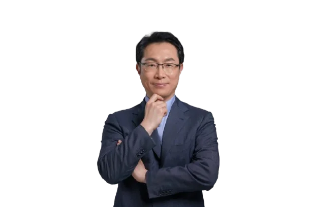

01 · EDUCATION
현장 사례를 배우는 교육
시니어 고객의 생활 변화를 살펴보고, 사례 읽기·토론·적용 활동으로 우리 조직의 과제를 구체화합니다.
교육 내용 보기시니어트렌드를 읽어주는 사람
최학희초고령사회 전환 전략가
시니어라이프비즈니스 대표이자
《시니어트렌드》 시리즈 저자입니다.
고객의 생활과 시장의 변화를 살펴
기업·공공기관의 교육·강연·컨설팅 과제로 연결합니다.

EXPERTISE · 관찰에서 실행까지
대기업·외국계·벤처의 다양한 산업 경험과 법인·개인사업 창업, 비영리 활동을 바탕으로 교육·컨설팅을 이어갑니다.
시니어 고객의 생활 변화를 살펴보고, 사례 읽기·토론·적용 활동으로 우리 조직의 과제를 구체화합니다.
교육 내용 보기공영방송 라디오와 시니어 전문 방송, 금융·보험 전문지 칼럼에서 시니어의 변화를 풀어 전해 온 경험을 강연에 담습니다.
강연 내용 보기글로벌 헬스케어 기업·시니어 시장 진출 기업 컨설팅, 주요 기관 자문과 리서치 모더레이터 경험으로 고객과 사업의 과제를 함께 살핍니다.
컨설팅 내용 보기기업·공공기관의 강의와 컨설팅은 최학희에게 연락해 주세요.
RESEARCH & INSIGHTS
《시니어트렌드 2027》과 이어지는 시리즈,
마케팅·비즈니스·시장의 빈틈을 다룬 매거진입니다.